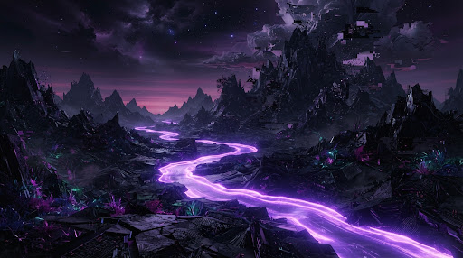

sift
deepfake blocker
Six pictures. Judge them right here.
Three are real photographs and three were generated. Which ones are deep fakes?

Synthetic Landscape
Generated concept
Cyber Hypercar
Generated concept
Amethyst Valley
Generated landscape
Cat in Luggage
Camera photograph
Banane 1 €30
Produce aisle snapshot
Office Desk
Camera photograph
Image threats. Stopped instantly.
Zero delay. Zero data collected.
Artificially Created Photos
Synthesized facial portraits, forged official documents, manipulated disaster scenes, and doctored prescription labels specifically designed to swindle donors and seniors.
Hyper-Realistic Synthetic Landscape
Generated landscape flagged in real-time before deceptive environmental or event imagery reaches feeds.
Setup in 3 steps.
Runs silently in your browser background.
Click Once
Tap the Download" button. The extension installs in under thirty seconds as a zip file.
Automatic Setup
Extract the zip file to download the project file directly as a chrome extension.
Silent Guard
Read news, scroll social media, and read emails in total safety. sift only lights up when a fake image or scam video is detected.
Frequently asked questions
Everything you need to know about staying protected with sift on your everyday devices.
Real peace of mind for families everywhere
“My granddaughter installed sift in thirty seconds flat. Last Tuesday, a video popped up on Facebook that looked exactly like our local news anchor telling us to immediately withdraw cash. sift placed a big purple badge across it flagging an AI impersonation. What a relief!â€
Martha Jenkins, 74
Retired High School Teacher • Columbus, Ohio
“Working in technology, I was genuinely terrified of what modern voice clones could do to my elderly parents. We put sift on both of their laptops. It gives our entire family tremendous confidence that they can browse independently without fear.â€
David Vance, 45
Son & Family Caregiver • Denver, Colorado
“I received an email link showing what looked like a genuine emergency alert from our state governor. sift instantly flagged the video: ‘Synthetic Lip Movement Detected’. That warning kept me from donating to a fraudulent crisis fund.â€
Eleanor Vance, 81
Retired Librarian • Scottsdale, Arizona
“Living four states away from my 86-year-old mother used to give me continuous anxiety whenever new AI scam alerts appeared on TV. Knowing sift runs silently inside her browser gives both of us absolute peace of mind.â€
Robert Chen, 52
Civil Engineer & Son • Seattle, Washington
“Neither of us grew up with computers. sift doesn’t complicate things with confusing settings. When a fake doctor photo appeared on a health blog, sift immediately marked it right on screen with clear text.â€
Barbara & Tom Miller, 78
Retired Postal Worker & Nurse • Fort Myers, FL
“The Zero-Tracking guarantee was essential for my father, who values his privacy above all else. sift does not inspect files or sell data—it simply shields him against deceptive media 24/7.â€
Sarah Al-Mansoor, 39
Daughter & Health Administrator • Chicago, IL